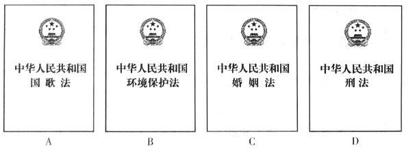

2018年北京市中考政治试题 · 选择题 第1、2、3、4、5题
1. 2017年10月18日至24日,中国共产党第十九次全国代表大会在北京举行。大会强调,我们党以全新的视野深化对共产党执政规律、社会主义建设规律、人类社会发展规律的认识，进行艰辛理论探索,取得重大理论创新成果,创立了
A.习近平新时代中国特色社会主义思想 B.人民当家作主的制度体系
C.中国特色社会主义法律体系 D.社会主义市场经济体制
2. 2017 年9月1日,第十二届全国人民代表大会常务委员会第二十九次会议通过了______，自2017年10月1日起施行。此法的实施, 有利于增强公民的国家观念, 弘扬爱国主义精神.培育和践行社会主义核心价值观。

依托“墨子号”量子科学实验卫星,我国某量子研究团队实现了多项世界领先的量子通信技术突破。回答第3、4题。
3.年轻的量了研究团队由不同学科背景的人员组成。他们掌握各种关键技术,发挥各自专业特长,相互配合,共同创造了量子研究的奇迹。这表明
A.年轻人都能创造奇迹 B.成功取决于领导者的才华
C.只要肯付出就一定能成功 D.成功离不开团队成员的通力合作
4.团队中首席研究专家在少年时代就对宇宙产生了浓厚的兴趣,带着这份初心,他在科研探索的道路上:不断前行，如今站在了全球量子研究的最前沿。这说明
A.不断改变兴趣才能成功 B.浓厚的兴趣有助于事业的成功
C.只要有兴趣就能实现人生理想 D.兴趣是促进事业发展的唯一因素
5.某班同学以“尊重自然,关爱生命,共生共存”为主题设计板报。下列选项符合板报主题的正确做法是
①中国全面禁止国内象牙商业性贸易,任何象牙交易都属于违法行为
②巴西龟是危险入侵物种,某同学把自己养的巴西龟放到河里
③某同学捡到一只受伤的大鸟抱回家,鸟的伤好后没有放归自然,留下继续饲养
④某华侨坚持26年,在海南建起约800公顷热带雨林,保护了当地多种珍贵热带植物
A.①② B. ①④ C.②③ D.③④